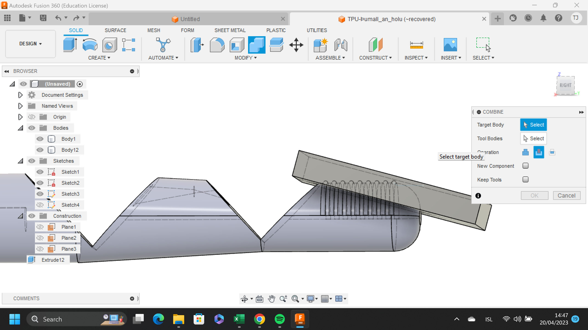
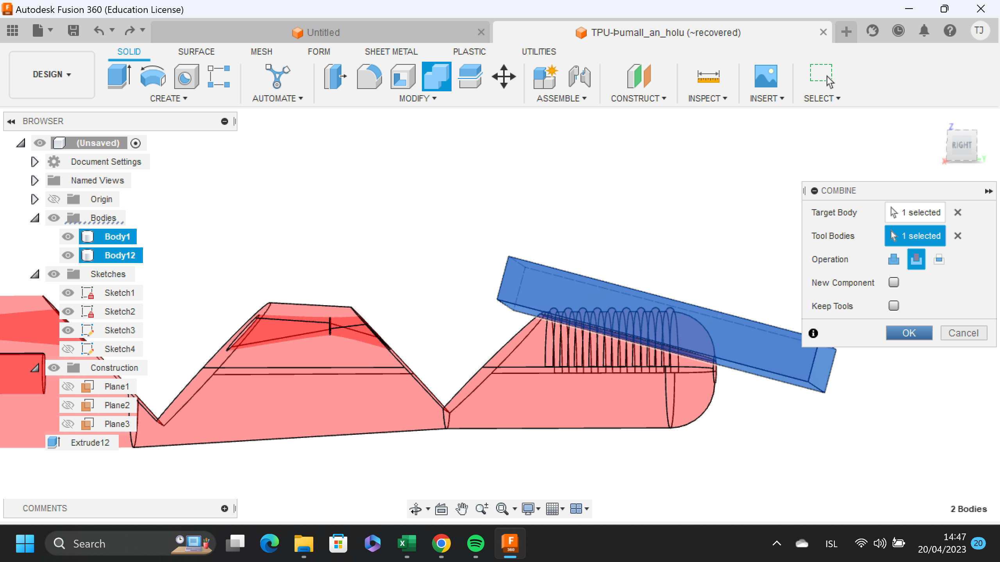
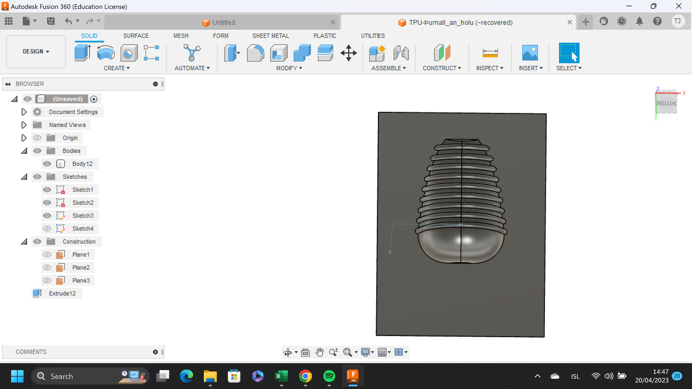

The following is a detailed description of my part of the forth and final project in the university course VÉL403G. The whole process can be found on my team mates website, Jónas Þór Gunnarsson. The objective of this particular project is to use a CNC machine to mill out a wax mold to then use as mold for silicone. The silicone should then be used as a mold for manufacturing other objects. Me and my team mates took a different route and used the wax mold to make silicone fingertips for a prosthetic hand me and Jónas Þór Gunnarsson have been working on. That particular project is called Týr´s hand and the process of it will soon be uploaded to this website as well.
Gantt chart
In the beginning of the project I made a Gantt chart to oversee the progress. It really helps making sure everything is done on time and everybody knows their part and can see the end goal of the project. I simply downloaded a template of this link and got to work. If you wish to you can check out my sheet here
CAD design
I already had a CAD design of the finger from me and Jónas´previous project, Týr´s hand. But I wanted the fingertip to have some extra grip so I made some fins on it to get more surface area. To do so I used a function called pipe. To draw the mold I drew a small box over the existing fingertip and gave it a little tilt.
Then, I used a function called mold to carve the shape of the fingertip into the mold
The CAD design of the mold is at last ready and so I sent it on to Gunnar Jarl Ívarsson to prepare the toolpath for the CNC.
